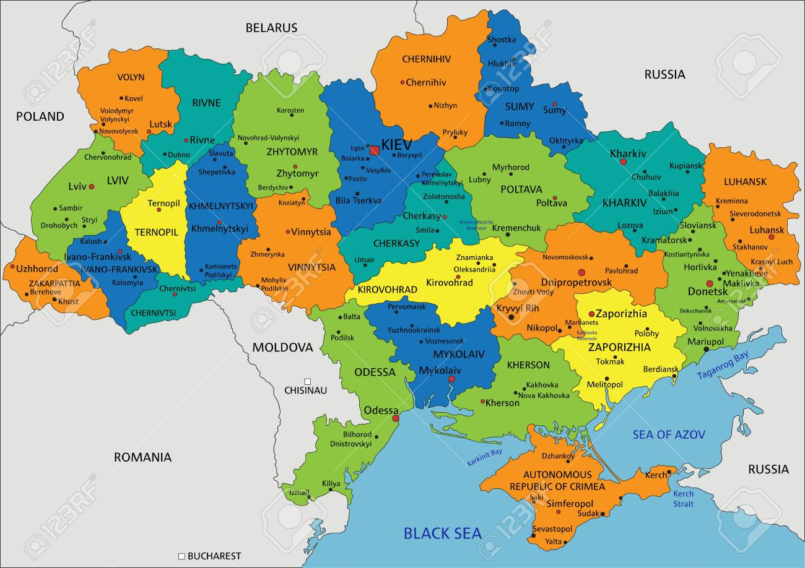

Localizada no leste europeu, a Ucrânia é o maior país totalmente localizado dentro do continente europeu.
| Dado | Informação |
|---|---|
| Capital | Kiev |
| Idioma oficial | Ucraniano |
| Moeda | Hryvnia (UAH) |
| Continente | Europa (Leste Europeu) |
| Fronteiras | Polônia, Eslováquia, Hungria, Romênia, Moldávia, Bielorrússia e Rússia |

Bandeira
Duas faixas horizontais: azul representando o céu e amarelo representando os campos de trigo do país.
Símbolo
Território
Com 603.700 km², é o segundo maior país da Europa em área, atrás apenas da Rússia.
Geografia